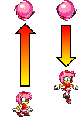
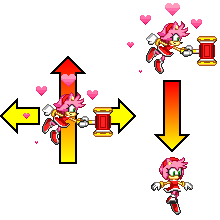
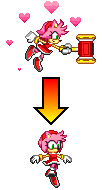
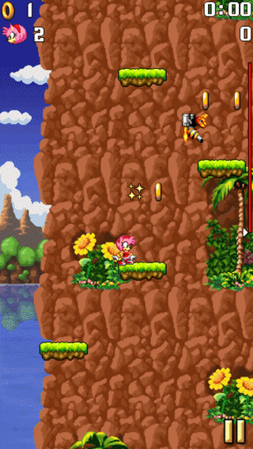
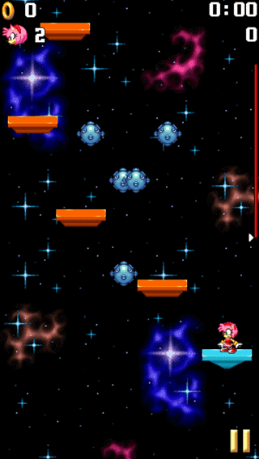
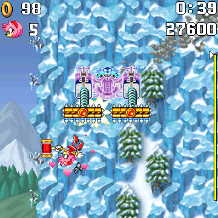
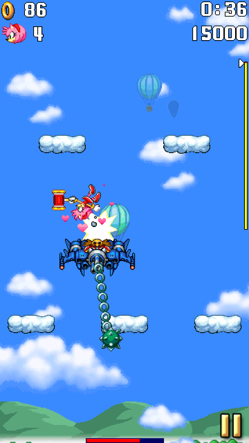

Amy Rose
Character Description

BIOGRAPHY:
Amy is a cheerful peppy hedgehog who has decided she is Sonic's girlfriend. She may be cute, but her Piko Piko Hammer makes her a formidable foe.
BRIEF GAMEPLAY DESCRIPTION:
In Sonic Jump Revival, Amy is an additional playable character.
With her more advanced yet accessible abilities, Amy is an interesting character to play as for begginers.
Unlocking Amy
Amy can be unlocked after clearing Cosmic Zone Act 3 and doesn't play a role in the story.
Abilities
Normal jump

Amy has a normal jump height, but while her falling speed is normal, her falling gravity is slightly lower.
Super Jump (Hammer Whirl)
DESCRIPTION:
Amy's Super Jump is the Hammer Whirl.
This ability allows her to perform a small extra jump.
Additionally, she can attack enemies and collect rings from a small distance.

FIRST COMMAND:
Her Super Jump has a small jump height, but you can still make Amy move left or right while using it.
During her Super Jump, her attack range is wider than usual.

SECOND COMMAND:
Using the Super Jump command during the Hammer Whirl makes Amy to cancel her attack and start falling.
While falling this way, her gravity is normal.
This command is useful to land on platforms faster while using the Super Jump.
Gameplay Tips
Landing on platforms quicker

While using the Super Jump command during the Hammer Whirl, Amy falls instantly.
If you use this technique near a platform, you can make Amy land on a platform instantly.
Attacking many badniks at once

Because Amy's Super Jump makes her attack range wider, you can attack a lot more badniks in a single jump.
Use the Hammer Whirl near a field of badniks to defeat them as many as possible.
This technique is useful to earn lots of points.
During boss battles
The increased attack range of her Hammer Whirl also affects bosses.
Use the Super Jump to attack the bosses easily and not to worry about getting hit by the spike obstacles.

During Mountain Zone Act 3, you can attack the boss without waiting for the spike bars to descend.

You can even attack bosses from below with a well-timed Super Jump.
Press the Super Jump command right above the boss to deal damage from above.